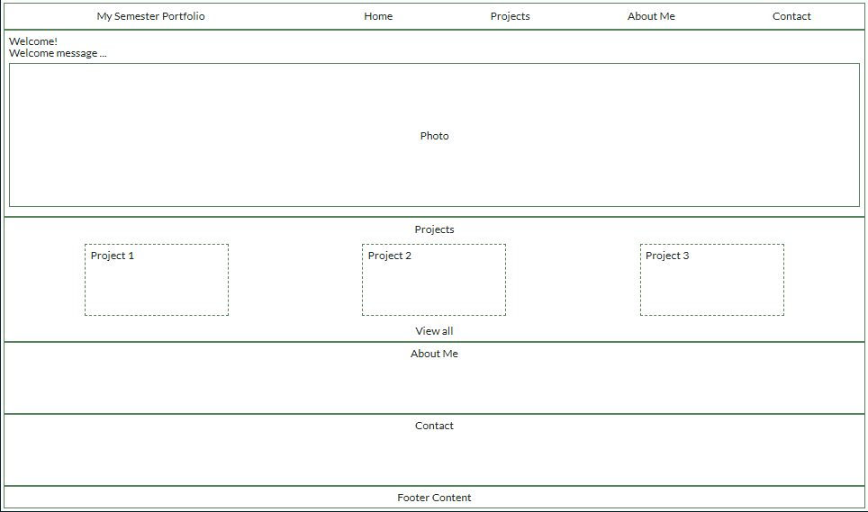

Site Name
"My Semester Portfolio"
This name represents all the work for this semester.
Site Purpose
This website serves as a personal portfolio to showcase all the projects I completed during thos semester. It highlights the skills I've developed, present my growth and provide a view of my work in one accessible place.
Scenarios
- What skills or understanding do you realize you were missing at the start of the semester, and how have you developed them over time?
- As someone reads through your portfolio, what story of growth do you think they would notice from beginning to end?
- Think about a time you felt stuck or frustrated during a project. How did you work through it, and what does that say about your approach to problem-solving?
- You're allowed to revise only one piece in your portfolio—what would you choose and how would you approach the revision differently now?
- Looking ahead, what habits or strategies that you used this semester would you continue using, and which would you leave behind?
Color Schema
Primary
Secondary
Accent 1
Accent 2
Accent 3
Typography
Lato, Arial, sans-serif
Wireframe
My Semester Portfolio
Welcome!
Welcome message ...
Photo
Projects
Project 1
Project 2
Project 3
View all
About Me
Contact

My Semester Portfolio
- Home
- Projects
- About Me
- Contact
Welcome!
Welcome message ...
Photo
Projects
Project 1
Project 2
Project 3
View all
About Me
Contact